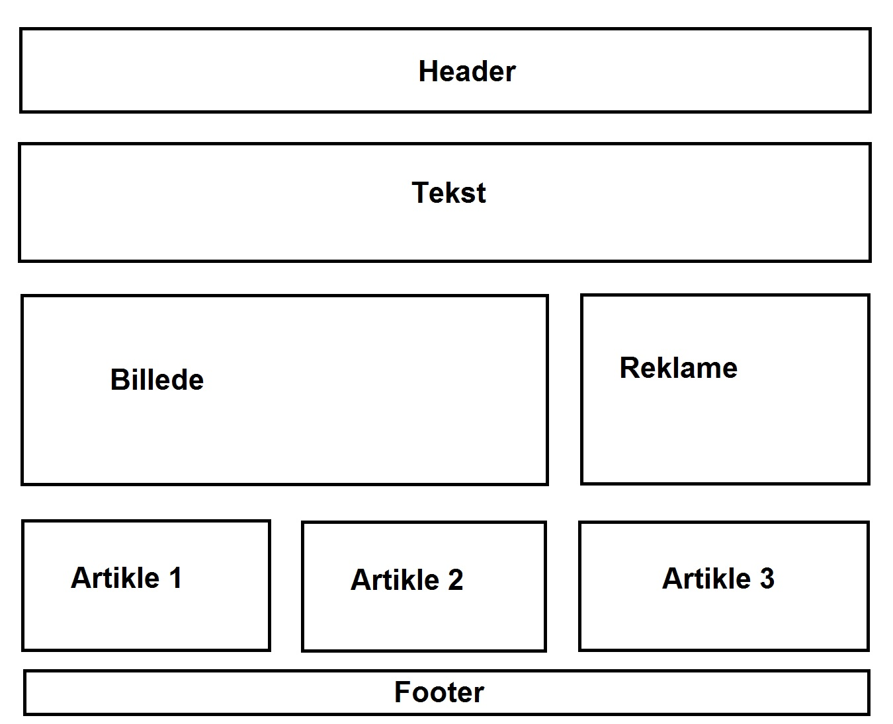

Grids er set som en af de nyeste måder at designer ens hjemmeside efter, og er set som "Det mest revolutionerende", før dette var det responsive webdesign der var på toppen.
Grids er stadig i dag meget nyt, og det er ikke alle web browsere der understøtter det.
#Header {
grid-area: Header;
}
Nu har man så angivet hvad ens header skal hedde i ens grid template, navnet man giver er op til en selv, det kunne have været a eller 1 mm.
#mitgrid {
Her angiver vi det er et grid system
display: grid;
Her bestemmer vi hvor meget luft der skal være mellem vores elementer i vores system.
grid-gap: 0.5em;
Her angiver vi hvor mange rækker der skal være, dette kan ændres hvis man vil tilpasse sit system til andre enheder, som mobilen.
grid-template-columns: 1fr 1fr 1fr;
Her angiver vi hvor mange rækker der skal være i vores grid system.
grid-template-rows: 1fr 1fr 1fr 1fr 1fr;
Og til sidst sætter vi vores elementer ind i vores system;
grid-template-areas:
"Header Header Header"
"Tekst Tekst Tekst"
"Billede Billede Reklame d"
"Artikle 1 Artikle 2 Artikle 3"
"footer footer footer";
}
Vi vil ende ud med et system der ser sådan her ud:
